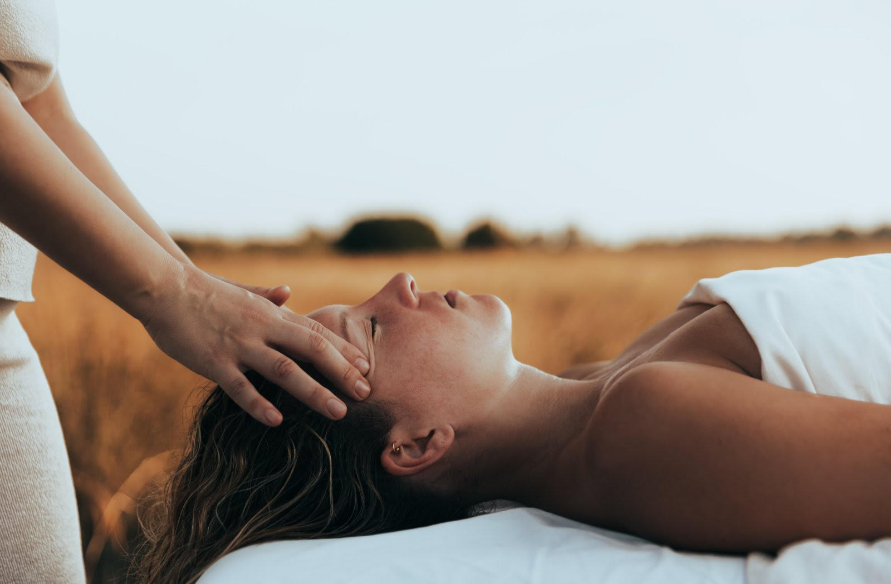
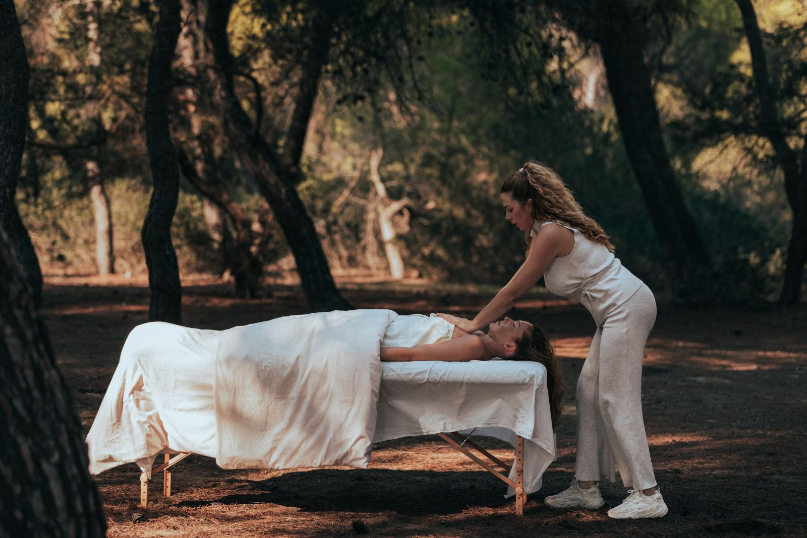

Η Ολιστική Θεραπεία Προσώπου είναι μια μοναδική εμπειρία αναζωογόνησης που συνδυάζει την φυσική περιποίηση του δέρματος με την ενεργειακή ευεξία, χρησιμοποιώντας μια σειρά από φυσικές και εναλλακτικές θεραπείες. Αυτή η πολυαισθητηριακή προσέγγιση φέρνει ισορροπία σε σώμα, νου και ψυχή, ενώ προσφέρει εξαιρετικά οφέλη για την υγεία και την ομορφιά του προσώπου.
Τι περιλαμβάνει η θεραπεία:
Η θεραπεία ξεκινά με εισπνοές αιθέριων ελαίων για να προσφέρουν ηρεμία και χαλάρωση. Παράλληλα, ο χώρος εμπλουτίζεται με αρωματοθεραπεία που ενισχύει τη διάθεση και συμβάλλει στη γενική ευεξία. Έπειτα τοποθετούνται κρύσταλλοι με θεραπευτικές ιδιότητες πάνω σε ενεργειακά κέντρα ώστε να εξισορροπήσουμε την ενέργεια του σώματος και να ενισχύσουμε τη φυσική ομορφιά. Οι κρύσταλλοι βοηθούν στην απομάκρυνση της αρνητικής ενέργειας και προάγουν την αρμονία. Μέσα στη θεραπεία ενσωματώνεται η ηχοθεραπεία, με χαλαρωτικούς ήχους που συντονίζουν τις συχνότητες του σώματος και βοηθούν στην απελευθέρωση του άγχους και της έντασης, δημιουργώντας ένα περιβάλλον βαθιάς χαλάρωσης.
Ξεκινάμε την περιποίηση του δέρματος εφαρμόζοντας μόνο φυσικά καλλυντικά, πλούσια σε θρεπτικά συστατικά που αναζωογονούν και θρέφουν το δέρμα. Τα αρώματά τους προέρχονται αποκλειστικά από αιθέρια έλαια. Οι ειδικές τεχνικές μασάζ που χρησιμοποιώ είναι σχεδιασμένες για να τονώσουν την κυκλοφορία, να αποτοξινώσουν το δέρμα και να χαλαρώσουν τους μύες του προσώπου. Κάθε θεραπεία ενσωματώνει εναλλακτικές θεραπείες και ενεργειακή θεραπεία για να εξισορροπήσουμε τα ενεργειακά πεδία του σώματος. Αυτό βοηθά στην αποκατάσταση της αρμονίας και ενισχύει τα αποτελέσματα της θεραπείας, κάνοντάς σας να νιώσετε πλήρως ανανεωμένη. Επιτρέψτε μου να σας οδηγήσω σε ένα μονοπάτι αληθινής ευεξίας και λάμψης.
Η φόρμουλα της Whamisa είναι 100% φυτική και vegan.Είναι κατά κύριο λόγο αντίθετοι στη χρήση οποιωνδήποτε
ζωικών και συνθετικών συστατικών, συμπεριλαμβανομένων των τεχνητών χρωστικών και αρωμάτων ωστόσο,
τα προϊόντα είναι εμποτισμένα με αιθέρια έλαια υψηλής ποιότητας σε μικρή δόση για να παρέχουν μια αισθητική εμπειρία.
Δεν αγάπα τη χημεία των συνθετικών συστατικών γι' αυτό χρησιμοποιεί: ρίζες, άνθη, σπόρους και φρούτα,
η φύση αποτελεί την καρδιά των συνταγών.
Η μοναδική άνυδρη καινοτόμος φόρμουλα, μας αρέσει γιατί τα καλλυντικά είναι συμπυκνωμένα που σημαίνει ότι χρειάζεσαι λιγότερη ποσότητα προϊόντος.
Έτσι ως αποτέλεσμα υπάρχει μικρότερη παραγωγήμείωση σε σπαταλη ενέργειας,λιγότερες συσκευασίες για ανακύκλωση.
Η χρήση χημικών συντηρητικών έχει αρκετές αρνητικές επιπτώσεις στην υγεία, συμπεριλαμβανομένου του αυξημένου
κινδύνου συσσώρευσης τοξικών χημικών στο δέρμα μας. Η Whamisa παρασκευάζει μόνο με φυσικά συντηρητικά φυτικής προέλευσης.

Μεταξύ άλλων, υποστηρίζουν την Good Neighbors, μια διεθνή ΜΚΟ που εργάζεται για την ανθρωπιστική ανάπτυξη.
Μερικές από τις ανησυχίες τους είναι η καταπολέμηση της πείνας, η ανάπτυξη μιας υγιούς κοινότητας,
η παροχή ιατρικής περίθαλψης και η προστασία και η εκπαίδευση των παιδιών.
Είναι μέλος του 1% For The Planet και έχουν έναν μικρό αλλά σημαντικό ρόλο στην υποστήριξη της περιβαλλοντικής υπεράσπισης σε όλο τον κόσμο.
Όλα τα προϊόντα και οι συσκευασίες της Whamisa δεσμεύονται στις αρχές της καθαρής ομορφιάς, κάθε μέρος των υλικών
έχει τη δυνατότητα ανακύκλωσης. Στη συσκευασία τα χαρτοκιβώτια είναι κατασκευασμένα με ανακυκλωμένο πολτό
ζαχαροκάλαμου, ο οποίος είναι ανακυκλώσιμος και βιοδιασπώμενος, τυπωμένος με φιλικό προς το περιβάλλον
και βιοδιασπώμενο μελάνι σόγιας. Οι περισσότερες από τις συσκευασίες περιποίησης της επιδερμίδας είναι γυαλί,
χρησιμοποιώντας 25% ανακυκλωμένο γυαλί PCR, με οξο-βιοδιασπώμενο και ανακυκλώσιμο πλαστικό καπάκι.
Τα πλαστικά μπουκάλια και τα βάζα είναι επίσης 100% ανακυκλώσιμαείναι επίσης ανακυκλώσιμα.